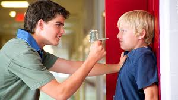

How To Stand Up To Bully
Being bullied is not an easy thing to deal with. Bullying often leaves kids feeling helpless, vulnerable and confused. Consequently, when kids are bullied they are often so shocked by bullying that they are not sure what to do. But this indecision and lack of response can open the door to more bullying.

How Your Child Can Stop Getting Bullied
To keep bullies from harassing your kids, make sure they know what to do if confronted by a bully.
Aside from developing their assertiveness skills, building their self-esteem and improving their social skills, they also need practical tools on how to handle bullying situations. Here are seven ideas that any child can implement.
Ignore the bully
Not reacting when someone says or does something hurtful is often the most effective response to bullying. Most bullies are looking for a reaction. They want the target to get angry or cry. And, if your child has an emotional response to bullying, it often continues and may even escalate. Conversely, if your child keeps on walking with his head held high every time someone engages in name-calling or any other type of bullying, the bully will eventually move on when he realizes he will not get a response from your child.
Tell the bully to stop
Again, bullies often do not expect someone to stand up to them. In fact, they often target kids they believe they can intimidate.
As a result, telling a bully to stop in a strong and confident voice can be very effective. In fact, bullies often count on finding a victim who will not say anything at all. But if your child makes sure the bully knows he cannot walk all over him, the bully is more likely to stop what he is doing.
Make a joke or agree with the bully
Some kids are naturally funny and find it easy to laugh right along with the bully. When kids are able to do this, it demonstrates that they are confident about who they are and it does not bother them if other people point out their flaws. In fact, they are often secure enough to laugh right along with the bully. When your child laughs with the bully, it diffuses any power the bully thought he had over your child and his bullying methods become ineffective.
Avoid bullying hot spots
Sometimes all it takes to prevent bullying is to avoid places where bullies hang out. These bullying hot spots include areas like the far corners of the playground, vacant hallways, bathrooms, locker rooms and the back of the bus. Be sure your child knows where these spots are located and that he avoids them or travels with a buddy when he can. Sometimes the best way to deter bullying is to avoid crossing paths with the bully.
Stick with friends
Bullies usually look for kids who are alone or socially isolated. Be sure your child knows that hanging out with friends is a great way to prevent bullying. If your child struggles with social skills or has very few friends, take steps to help him develop friendships.
Having just one healthy friendship can go a long way in protecting your child from bullies.
Know how to get out of a bullying situation
Talk to your child about ways in which he can defend himself against bullies, especially if the bullying is physical. For instance, be sure your child knows to keep his eye on the exit and to use it when the opportunity presents itself. Other options include making a lot of noise, attracting attention and knowing how to deflect any type of physical aggression. Your child does not have to "fight" the bully to defend himself. He just needs to know how to diffuse the situation and get to safety.
Report the bullying to an adult
Be sure your child knows that the best way to prevent bullying is to report it. Without adult intervention, bullying often will continue or escalate. Talk about the reasons why kids don’t tell others they are being bullied and be sure your children know that you understand their fears. Stress that while it takes a lot of strength and courage to report bullying, it is the smartest way to handle this type of situation. Also be careful not to engage in victim-blaming or to criticize your child for getting bullied. Bullying is a choice made by the bully and never the responsibility of the victim.
*Source: https://www.verywellfamily.com/plan-for-standing-up-to-bullying-460810